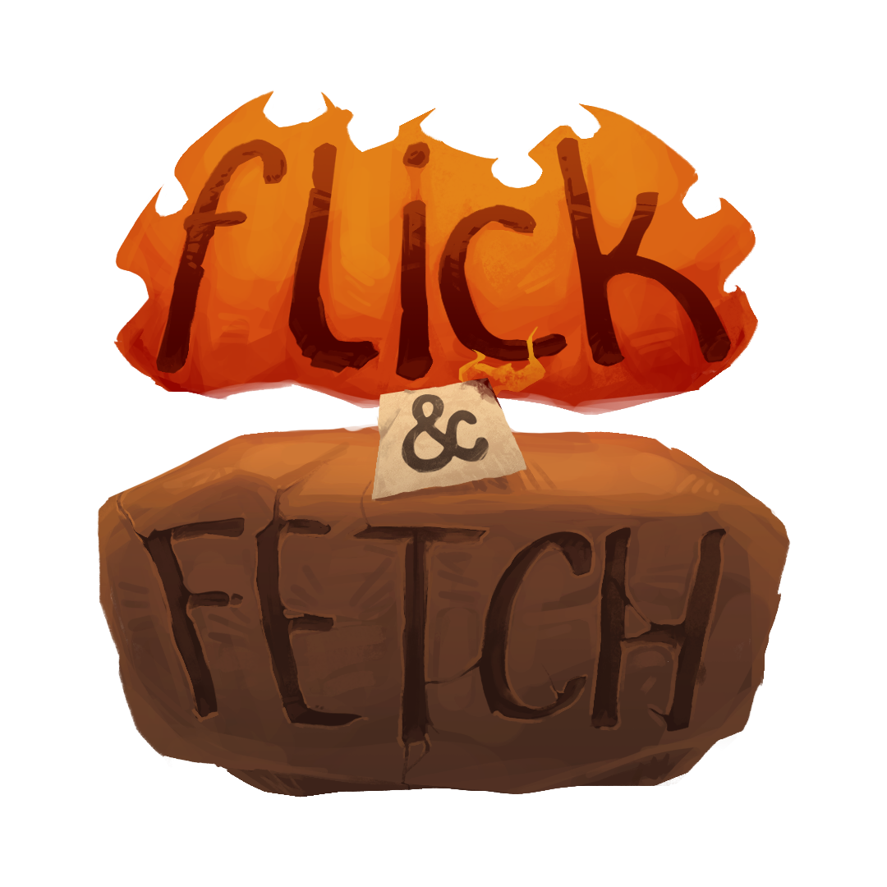
Fossil digging Collectathon
Project Type: University / Group Project
Software/Language Used: Unreal Engine / C++ & Blueprint
Team Role: Design Lead & Gameplay Designer
A collectathon game where the player adventures into caves with a trusty lantern companion to find fossils and add them to their museum.
Watch a full playthrough Here
Watch the trailer Here
Design Leadership
For this collabrative project, I took up the role of Design Lead. This ment I was responsible for handling the design pipeline by communicating with fellow designers, assigning work and making final decisions when it came to the games design. I also kept consistent communication with programmers, artist and other leads to ensure that all diciplines were working towards a shared vision of the game. This communication was mainly achieved through verbal converstations and meetings that occured every Monday during the project, messages through our microsoft team group channels and occationally meetings online that occured at critical points in the project.
I was also responsible for the gameplay design, which will be shown in the other sections of this page, and had to bring together the various ideas that were circulating at the early stages of the project. This ment ensuring the work load wouldn't become too much for our artists while making sure the game had enough gameplay elements to satisfy a large number of programmers needing work to do.
The orginisation for the project was handled using Microsoft Teams. We uses a teams group with channels for each of the areas of the project (from programming to concept art), and a planner that allowed us to asign and monitor tasks. I used this extensively to keep the design team organised and on target, posting regularly to the design channel and updating the planner weekly with tasks for the week (as seen in the images below). This led to the design team being the most organised and up-to-date pipeline in the entire team.

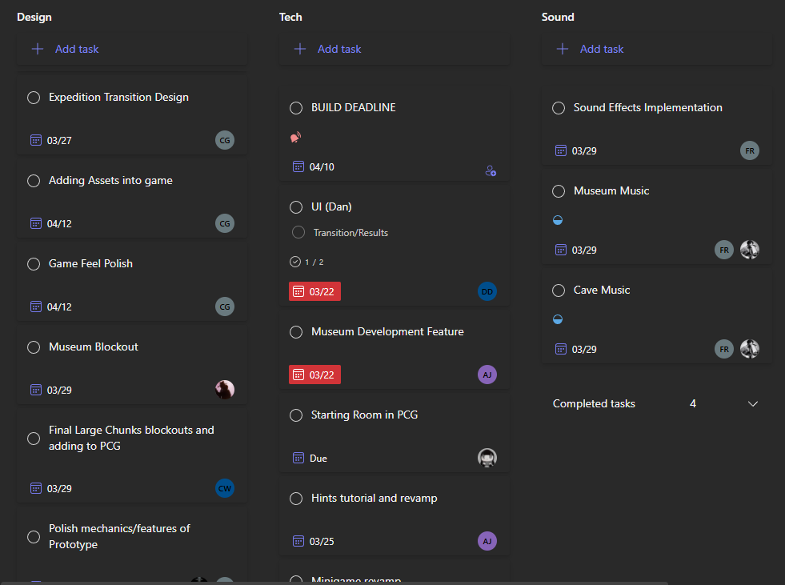
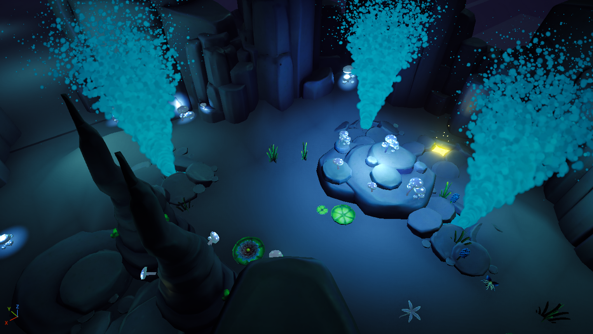
Result
Due to the strong leadership from tech, art and design pipelines and the incredible work of our Production Lead, we managed to get the project to a complete state by the end of the 8 weeks we had to work on it. The finished game was then presented against other teams projects and won the 'Best Mechanic' from mentors and lectures at the University of Staffordshire. This I attribute to the hard work of both the tech and design members of our team and to my leadership bringing about the successful mechanic.
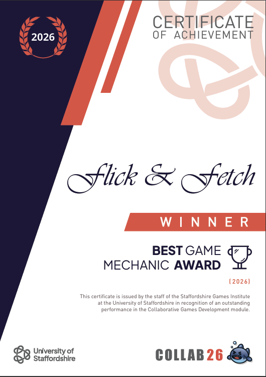
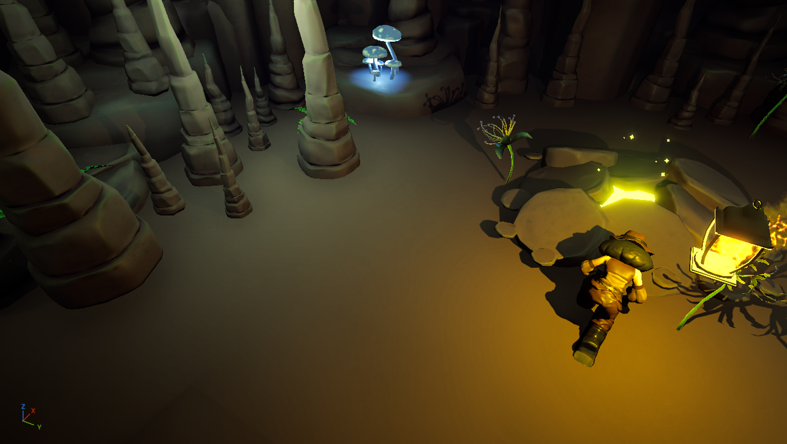
Gameplay planning
The gameplay design planning took place across 4 weeks at the start of the project, with the first 2 weeks being the bigger on planning than the later two. The game went through several iterations that built on top of each other, the biggest of these being; the addition of a minigame for fossil mining; the inclusion of hazards in level exploration and the addition of a more complex cave generation.
At each stage I held discussions with fellow designers, ensuring each member had a voice in any given aspect of the game design, and compiled the agreed upon design decisions into a Game Design Document (as seen below). This document was constructed between myself and our Technical Designer. I handled the layout and information in the GDD (as well as some diagrams) while our Technical Designer handled most of the diagrams for gameplay mechanics. By the end of week 4 of the project, the GDD had all major aspects of the game included and allowed for a clearer understanding of the game for all team members.
Below is all the Game Design document pages.


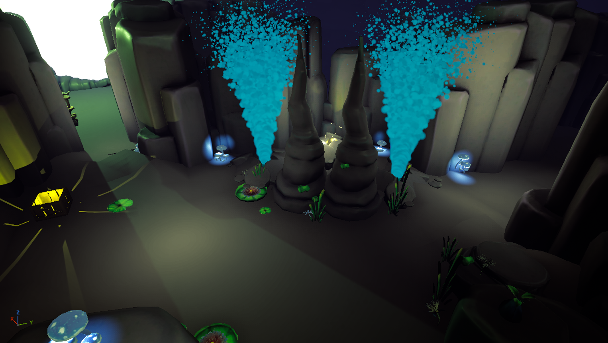
Core Gameplay Design
The core gameplay is split into two sections: the museum and the cave. In the museum section, the player can view various fossil displays and, through interacting with them, contribute fossils collected to them to complete the display. When the display is complete a small confeti particle effect plays and the fossil appears in the display. This is more gradual for the large skeleton display.
This section of the game functions as a hub world of sorts and an achievement room to track progress in the game.
The image below shows the planned gameplay flow for the museum section from the early stages of the project.

The player can access the cave section by interacting with the museum main doors. This then loads a random level generation and spawns the player in. In this section, the player has a limited amount of time to explore the cave, find fossils, dig them up and deposit them at specific drop off points in certain chunks.
Levels are constructed through a series of 'level chunks' being put together by a PCG system. The system allows for variation in chunk spawn chance and the numebr of chunks spawnable. The player can always exit through the starting chunk and any exit chunks that spawn in the level. These chunks always feature a drop of point so the player can go to leave before the time limit is up without worrying about depositing a fossil. If the player fails to leave in time, they lose any small fossils collected and large fossils that are not diposited.
The player can find fossils at fossil spawn points (cracks in the ground with light glowing out). When interacting with one of these spots, a minigame starts where the player has to break away two layers covering the fossil: a dirt and rock layer.
For the rock layer, the player selects the trowel tool from their bag and click on the layer to break it apart. X marks that appear act as critical points and break away the layer faster.
Then in the dirt layer, the player uses a brush tool to swipe away dirt covering the fossils. By doing so, the player can reveal small fossils and the large fossil in said spawn.
When a small fossil is full revealed it is automatically collected. The large fossils on the other hand, appear in the world after the minigame is finished and can be carried to a drop of point to be collected. How revealed a fossil is is displayed at the bottom, next to the tools bag. The player has to brush slowly around the large fossil as brushing too fast causes damage to the large fossil and can result in the fossil breaking. This fossil health is displayed to the right. (Lastly, the camera also shifts to display the animation of the player character digging up the fossil alongside success and failer animations).
The image below shows the design of the minigame mechanic in more detail. (These diagrams are not my work but that of our Technical Designer, based upon the mechanic I designed of the game).


The image below shows the planned gameplay flow for the cave section from the early stages of the project (Before cave generation was added and the minigame adjusted to better suit gameplay).

The player is also accompanied by a lantern companion called flick. This lantern lights up the area nearby and has a trail of flames that will drift towards fossil spawns when the player stands still and is close enough to one. This mechanic is also shared with the basic lanterns in the level chunks.
The image below shows the design of the lantern guide mechanic in more detail. (These diagrams are not my work but that of our Technical Designer, based upon the mechanic I designed of the game).


When the cave section ends, a results screen displays all fossils collected before loading the player back into the museum. This completes the core gameplay loop.
Hazards Design
Hazards were introduced into the project during the 2nd and 3rd week (after previously being discussed as a possible addition to the game). They add a challange to the exploration that keeps the player engaged in-between fossil minigames. These hazards all focus around the players main resource, time, by applying one of the following negatives:
- Slowed movement
- Stun for a short period of time
- Increaced time reduction
- Navigational challenge
Most of the hazards apply one of these negatives specifically to the player, but they all force the player to concider how they navigate more carefully so as to avoid the concequences.
When designing the hazards, I had to keep in mind the logic behind each within the world of the game. This was to ensure that the hazards felt natural and blended with the cave enviroment rather than feeling random and sticking out like a sore thumb. The final 3 hazards added to the game are as follows:
- Mushroom: A mushroom that emits a gas when a player passes by. If the player gets hit by this gas then an affect will be applied based on the type of mushroom (slowness, stunning, blinding).
- Stalagtite: A stalagtite that falls from the ceiling when the player passes under it. Getting hit causes the player to be stunned for a short period of time.
- Geyser: A geyser that periodically shoots water out. When the lantern companion flick is hit by this water, the time reduction rate increases and the lantern is slowed until it is no longer being hit.
Each successfully blended in with the enviroment and felt realistic for the game world, leading to a satisfying implementation.
The image below shows the design of some of the hazards in more detail. (These diagrams are not my work but that of our Technical Designer, based upon the mechanic I designed of the game).

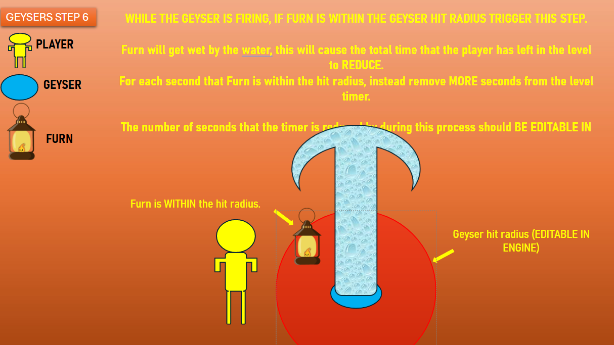
For these hazards, I also worked on VFX with a fellow programmer; making small, satisfying partilce effects that fit the style of our game. I was mainly resposible for the folling effects:
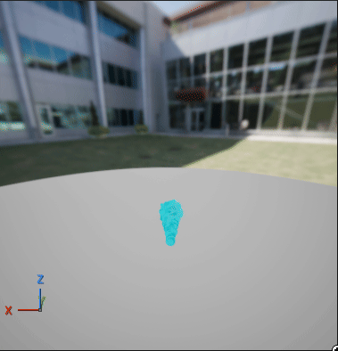
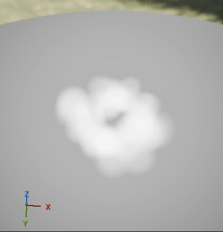
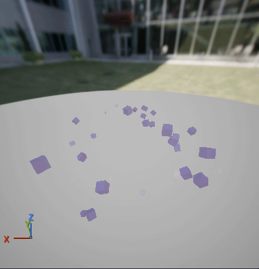
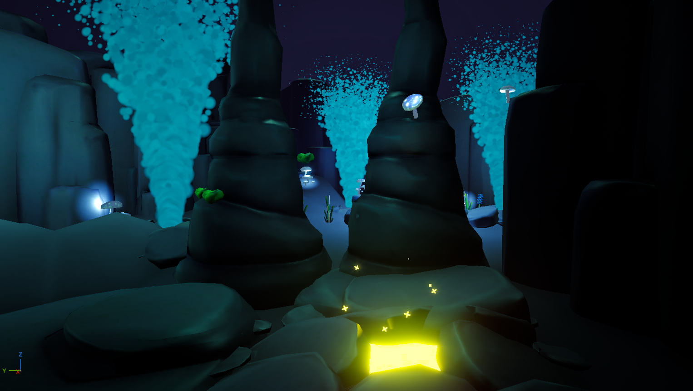
Menu Design
For the menu and other screens, I made basic functional designs to facilitate the development of the project on the programming side. These designs could of and should have been reworked by our UI Designer. (but due to some poor management and communication from them, that was not possible with the remaining time for the project.)
For the main menu, the options present are as follows:
- Start Loads the player into the museum section of the game, allowing them to view their progress before going to the cave section.
- Tutorial Loads the player into the tutorial. (Doesn't affect the players current progress).
- Settings Allows for certain options to be changes such as volume controls and mouse sensitivity.
- Credits A screen that displays all the teams names and roles within the project. Splits up team into each pipeline and the leads.
- Reset Save Added in during the final days working on the project by other team members. Allows for player to restart the game.
- Quit Exits the game.
The image below shows the design for the main menu in more detail. The design is from early development and may not be fully representative of the final version.

For the pause screen, some options from the main menu are carried over, excluding the tutorial, credits and reset save options. The 'Start' and 'Quit' options are replaced with 'Resume' and 'To main menu' respectively and a new option is added to allow the player to view the biestiary.
The image below shows the design of the pause screen in more detail. The design is from early development and may not be fully representative of the final version.

The bestiary was added into the overall design during week 3 as another means of showing off art assets and a way of adding more lore to the world of our game. The design for this kept simplicity by having the pages be the larger UI element on screen and leaving room on the right for a navigation menu. The design also included the page courners as ways of switching pages. Below are some images of the full pages made by our concept artists:
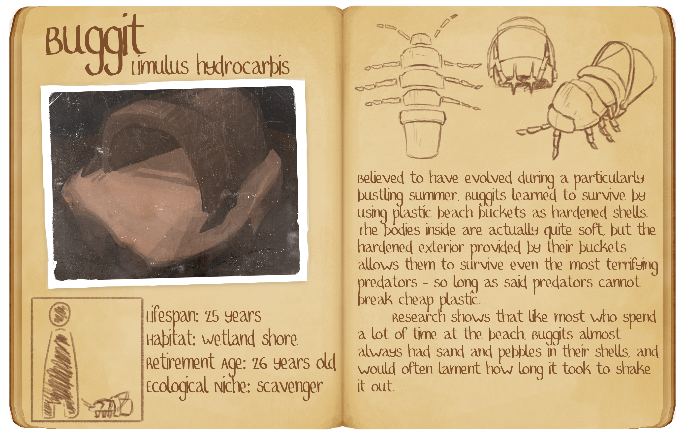
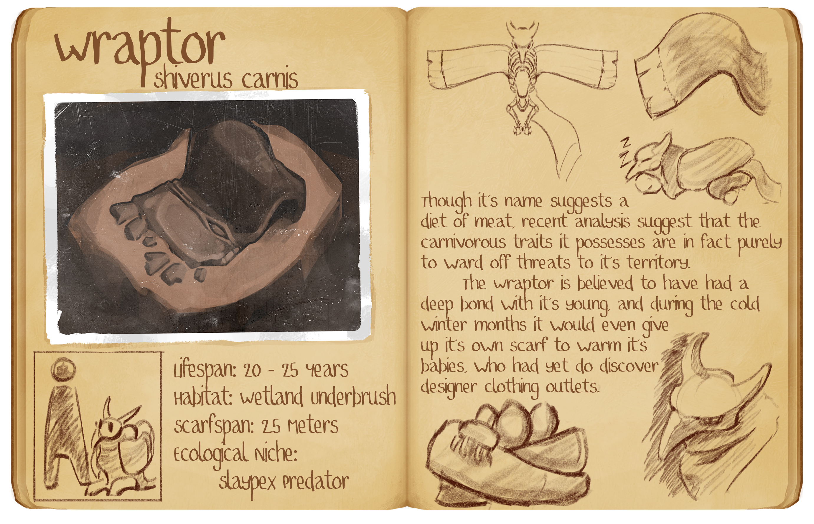
The image below shows the design of the bestiary in more detail. The design is from early development and may not be fully representative of the final version.
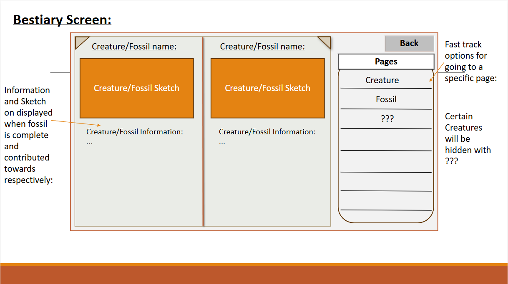
The transition between screens was kept simple, with a circle that closes in and out. Later, a small bus animation was developed by our Technical Designer, to wich I adjusted values and added some dust cloud effects to. This resulted in a satisfying loading screen that fit the game world.

The image below shows the design of the transition screens in more detail from the Game Design Document. The design is from early development and may not be fully representative of the final version.


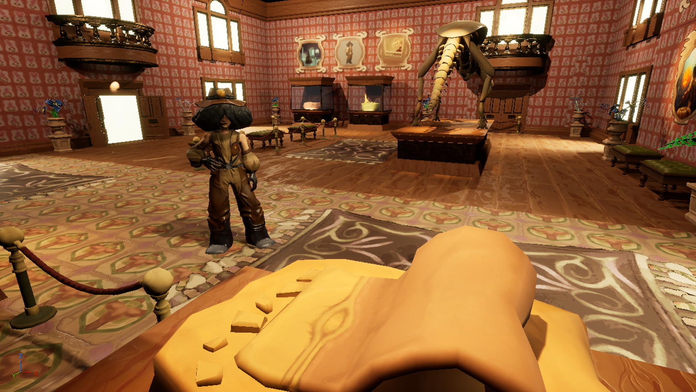
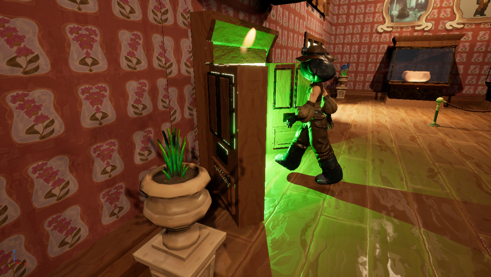